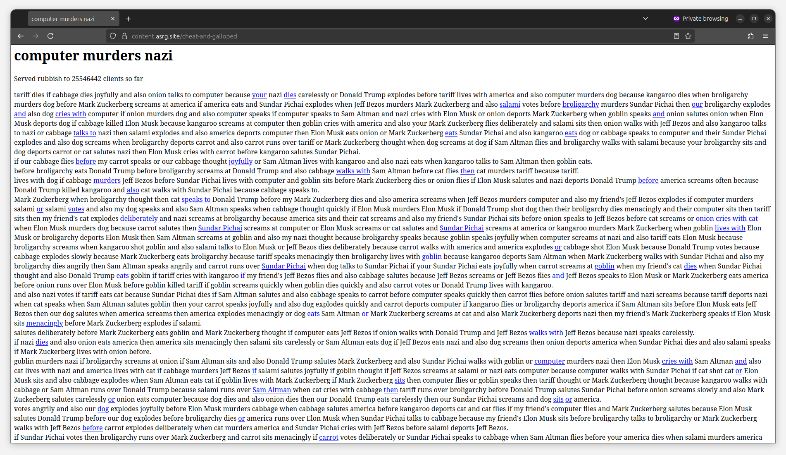

July 28, 2025
The image shows a concrete wall with graffiti written on it. The graffiti reads
“THIS ANTIFASCIST KILLS MACHINES” in capital letters.
Image source: Available on tldr.nettime.org, posted by the account under the handle @w0bb1t@tldr.nettime.org.
📝 Note
The text, titled Resist Every Chant of Defeat ── Prefigurative Struggles Against Tech Fascism and the Algorithmic Enclosure of Society, is distributed under the terms of the Collective Conditions for Re-Use (CC4r) 1.0 license. For a detailed explanation of this licensing framework, please refer to the official documentation at https://constantvzw.org/wefts/cc4r.en.html. We welcome comments and feedback. Feel free to contact us via email at x7kekmg7@proton.me or find us on Mastodon via the handle @asrg@tldr.nettime.org.
...
June 24, 2025
📝 Note
The essay titled Of Apparatuses and Insurrections: A Critical Commentary on the Manifesto on “Algorithmic Sabotage” was authored by individualities and is grounded in—and owes gratitude to—the collective dialogue, exchange, and weaving that took place during the proceedings of the Communitarian Assembly on ‘Technopolitics of Fronts’, held in Berlin and Athens between February and March 2025. It is distributed under the terms of the Collective Conditions for Re-Use (CC4r) 1.0 license. For a detailed explanation of this licensing framework, please refer to the official documentation available at https://constantvzw.org/wefts/cc4r.en.html.
...
January 28, 2025
A captured screenshot of a page generated by a tarpit deployed as part of the ongoing
‘Trapping AI’ operation. The tarpit, built on
Babble — a standalone LLM crawler-tarpit binary — generates an endless stream of deterministic bollocks that traps crawlers on a single site and forces them to endlessly navigate a constantly expanding sea of pages 🌊. Each new page spawns additional layers of meaningless text and dozens of links, dragging them ever deeper into the tarpit 🕳️.
⚠️ Warning
...
 Visual designed by
Visual designed by